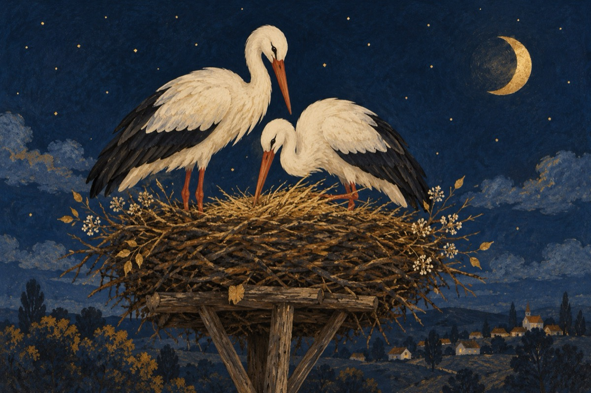

Părinților mei
BICHEȘTIUL pentru voi, ai noștri părinți
A fost să fie nodul gordian
Aici a trebuite să vă uniți
Cum Siretul în cursul Dunărean!
Cum berzele cuibul grijuliu și l-au făcut.
Prin greutăți și bucurii, soare, vânt și ploi!
Ființele de azi care trăim, le-ați conceput.
Plecând mai timpuriu, cum tata și mama dintre noi!
Azi eu cu timpu-mbătrânit
Cândva copil pe lângă voi,
La locul unde din nou v-ați întâlnit,
Sub crucea sfântă amândoi
Copilul de-altădată a venit!
Dar timpul le-a cernut pe toate
Te-am moștenit în cuget și-n iubire
Și-n cinste am purtat numele tău aparte,
Ajungând din cei copii, acum la-mbătrânire
Vă mângâi crucea care v-a unit
Cu rugă către Dumnezeu
Și vărs o lacrimă-n pământul ce v-a acoperit!
Cu gândul și cu fapta la voi mereu!
Vasile Groza
Apare și în: Poezii de suflet.